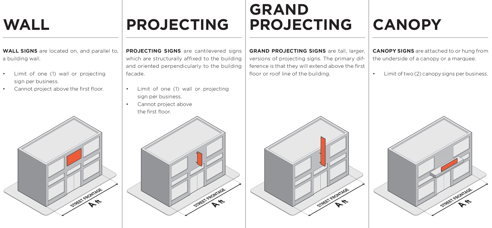
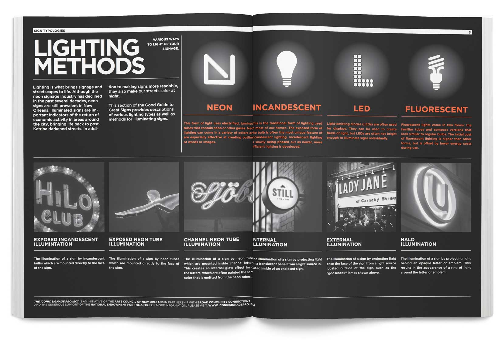
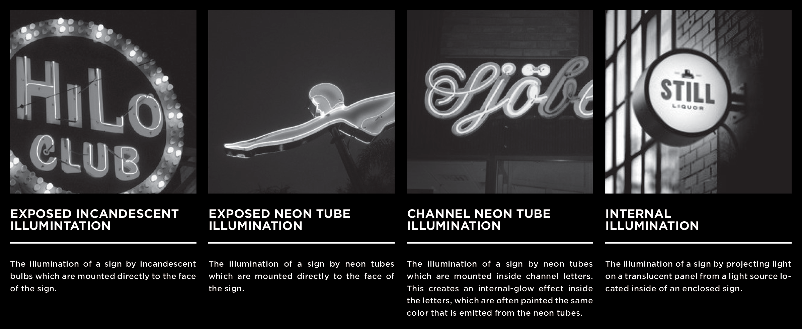
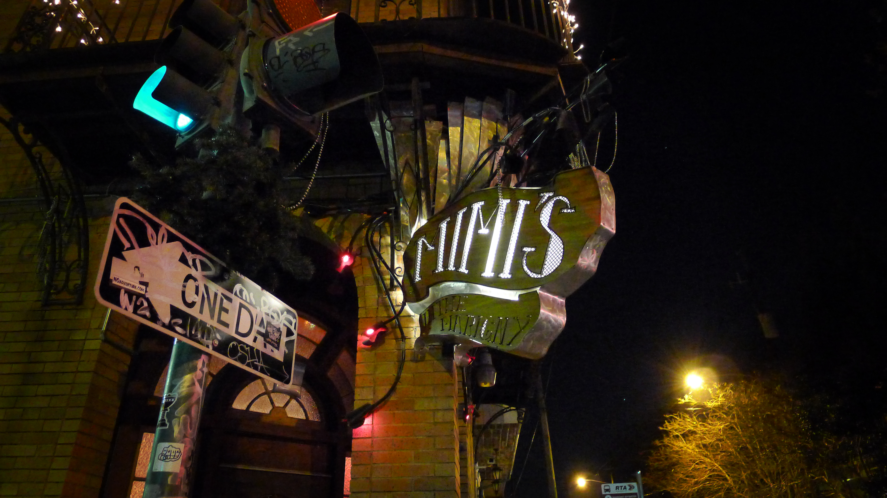
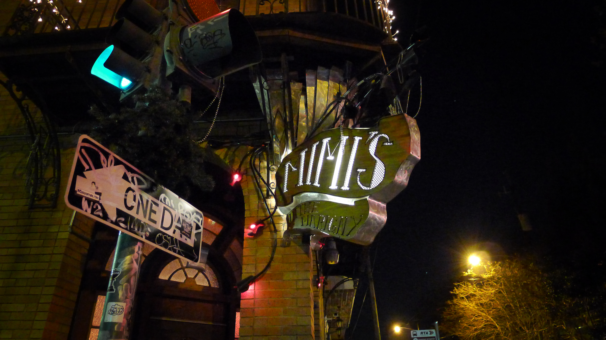

The Good Guide to Great Signs
Illustrating New Orlean’s dense signage ordinance
The Good Guide to Great Signs translates New Orlean’s dense zoning ordinance into diagrams and visuals so that artists and businesses participating in the Iconic Signage Project can better understand the city’s signage guidelines.
Iconic Signage Project (ISP) received $25,000 grant from the National Endowment for the Arts (NEA) to support the revitalization of New Orleans’ Broad Street “Main Street” corridor by creating a cohesive visual identity. The Arts Council of New Orleans and Broad Community Connections matched the NEA grant to commission visual artists and designers to create neon signage for local businesses along the corridor. Currently a hodge-podge of facades, the Iconic Signage Project will create a glowing cohesive visual identity for Broad Street, which is a vital East-West route through the center of the city.
Broad Street was recently designated as an Inner City Urban Corridor District, a new zoning district type of the City of New Orleans created with the goal of improving the visual appeal and pedestrian accessibility of major inner-city street corridors. The new zoning district establishes a set of guidlines for commercial signage. The Good Guide to Great Signs provides local businesses and signage artists with a visualization of the zoning guidelines.
Broad Street Context
Meeting local business owners to gauge interest in being paired with an artist for the Iconic Signage Project.

Goodfellas Barbershop

F&F Candle Shop
Guide Content
A deconstruction of the New Orleans zoning ordinance signage specifications.
Calculating sign area
Sign area is the maximum size of the sign(s) a business is allowed to display (up to 70 ft2). It is calculated using the width of the building or tenant space (shown as A in the diagram below). If a building is A ft wide, then sign(s) can be as large as A sq. ft.
Signage typology
Requirements vary depending upon the type of sign a business is interested in implementing.

 
This section provides descriptions of various lighting types and methods for illuminating signs.
Signage Research
Exploring the city's rich and vibrant tradition of illuminated signage. Lighting is what brings signage and streetscapes to life.
Although the neon signage industry has declined in the past several decades, neon signs are still prevalent in New Orleans. Illuminated signs are important indicators of the return of economic activity in areas around the city, bringing life back to post-Katrina darkened streets. In addition to making signs more readable, they also make our streets safer at night.

 
